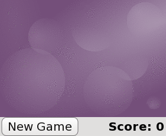

QML Advanced Tutorial 4 - Finishing Touches
Adding Some Flair
Now we're going to do two things to liven up the game: animate the blocks and add a High Score system.
In anticipation of the new block animations, Block.qml file is now renamed to BoomBlock.qml.
Animating Block Movement
First we will animate the blocks so that they move in a fluid manner. QML has a number of methods for adding fluid movement, and in this case we're going to use the Behavior type to add a SpringAnimation. In BoomBlock.qml, we apply a SpringAnimation behavior to the x and y properties so that the block will follow and animate its movement in a spring-like fashion towards the specified position (whose values will be set by samegame.js).Here is the code added to BoomBlock.qml:
property bool spawned: false Behavior on x { enabled: block.spawned; SpringAnimation{ spring: 2; damping: 0.2 } } Behavior on y { SpringAnimation{ spring: 2; damping: 0.2 } }
The spring and damping values can be changed to modify the spring-like effect of the animation.
The enabled: spawned setting refers to the spawned value that is set from createBlock() in samegame.js. This ensures the SpringAnimation on the x is only enabled after createBlock() has set the block to the correct position. Otherwise, the blocks will slide out of the corner (0,0) when a game begins, instead of falling from the top in rows. (Try commenting out enabled: spawned and see for yourself.)
Animating Block Opacity Changes
Next, we will add a smooth exit animation. For this, we'll use a Behavior type, which allows us to specify a default animation when a property change occurs. In this case, when the opacity of a Block changes, we will animate the opacity value so that it gradually fades in and out, instead of abruptly changing between fully visible and invisible. To do this, we'll apply a Behavior on the opacity property of the Image type in BoomBlock.qml:
Image { id: img anchors.fill: parent source: { if (block.type == 0) return "pics/redStone.png"; else if (block.type == 1) return "pics/blueStone.png"; else return "pics/greenStone.png"; } opacity: 0 Behavior on opacity { NumberAnimation { properties:"opacity"; duration: 200 } } }
Note the opacity: 0 which means the block is transparent when it is first created. We could set the opacity in samegame.js when we create and destroy the blocks, but instead we'll use states, since this is useful for the next animation we're going to add. Initially, we add these States to the root type of BoomBlock.qml:
property bool dying: false states: [ State{ name: "AliveState"; when: spawned == true && dying == false PropertyChanges { target: img; opacity: 1 } }, State{ name: "DeathState"; when: dying == true PropertyChanges { target: img; opacity: 0 } } ]
Now blocks will automatically fade in, as we already set spawned to true when we implemented the block animations. To fade out, we set dying to true instead of setting opacity to 0 when a block is destroyed (in the floodFill() function).
Adding Particle Effects
Finally, we'll add a cool-looking particle effect to the blocks when they are destroyed. To do this, we first add a ParticleSystem in BoomBlock.qml, like so:
ParticleSystem { id: sys anchors.centerIn: parent ImageParticle { // ![0] source: { if (block.type == 0) return "pics/redStar.png"; else if (block.type == 1) return "pics/blueStar.png"; else return "pics/greenStar.png"; } rotationVelocityVariation: 360 // ![0] } Emitter { id: particles anchors.centerIn: parent emitRate: 0 lifeSpan: 700 velocity: AngleDirection {angleVariation: 360; magnitude: 80; magnitudeVariation: 40} size: 16 } }
To fully understand this you should read Using the Qt Quick Particle System, but it's important to note that emitRate is set to zero so that particles are not emitted normally. Also, we extend the dying State, which creates a burst of particles by calling the burst() method on the particles type. The code for the states now look like this:
states: [ State { name: "AliveState" when: block.spawned == true && block.dying == false PropertyChanges { img.opacity: 1 } }, State { name: "DeathState" when: block.dying == true StateChangeScript { script: particles.burst(50); } PropertyChanges { img.opacity: 0 } StateChangeScript { script: block.destroy(1000); } } ]
Now the game is beautifully animated, with subtle (or not-so-subtle) animations added for all of the player's actions. The end result is shown below, with a different set of images to demonstrate basic theming:

The theme change here is produced simply by replacing the block images. This can be done at runtime by changing the Image source property, so for a further challenge, you could add a button that toggles between themes with different images.
Keeping a High Scores Table
Another feature we might want to add to the game is a method of storing and retrieving high scores.
To do this, we will show a dialog when the game is over to request the player's name and add it to a High Scores table. This requires a few changes to Dialog.qml. In addition to a Text type, it now has a TextInput child item for receiving keyboard text input:
Rectangle { id: container ... TextInput { id: textInput anchors { verticalCenter: parent.verticalCenter; left: dialogText.right } width: 80 text: "" onAccepted: container.hide() // close dialog when Enter is pressed } ... }
We'll also add a showWithInput() function. The text input will only be visible if this function is called instead of show(). When the dialog is closed, it emits a closed() signal, and other types can retrieve the text entered by the user through an inputText property:
Rectangle { id: container property string inputText: textInput.text signal closed function show(text) { dialogText.text = text; container.opacity = 1; textInput.opacity = 0; } function showWithInput(text) { show(text); textInput.opacity = 1; textInput.focus = true; textInput.text = "" } function hide() { textInput.focus = false; container.opacity = 0; container.closed(); } ... }
Now the dialog can be used in samegame.qml:
Dialog { id: nameInputDialog anchors.centerIn: parent z: 100 onClosed: { if (nameInputDialog.inputText != "") SameGame.saveHighScore(nameInputDialog.inputText); } }
When the dialog emits the closed signal, we call the new saveHighScore() function in samegame.js, which stores the high score locally in an SQL database and also send the score to an online database if possible.
The nameInputDialog is activated in the victoryCheck() function in samegame.js:
function victoryCheck() {
...
//Check whether game has finished
if (deservesBonus || !(floodMoveCheck(0, maxRow - 1, -1))) {
gameDuration = new Date() - gameDuration;
nameInputDialog.showWithInput("You won! Please enter your name: ");
}
}
Storing High Scores Offline
Now we need to implement the functionality to actually save the High Scores table.
Here is the saveHighScore() function in samegame.js:
function saveHighScore(name) {
if (scoresURL != "")
sendHighScore(name);
var db = Sql.LocalStorage.openDatabaseSync("SameGameScores", "1.0", "Local SameGame High Scores", 100);
var dataStr = "INSERT INTO Scores VALUES(?, ?, ?, ?)";
var data = [name, gameCanvas.score, maxColumn + "x" + maxRow, Math.floor(gameDuration / 1000)];
db.transaction(function(tx) {
tx.executeSql('CREATE TABLE IF NOT EXISTS Scores(name TEXT, score NUMBER, gridSize TEXT, time NUMBER)');
tx.executeSql(dataStr, data);
var rs = tx.executeSql('SELECT * FROM Scores WHERE gridSize = "12x17" ORDER BY score desc LIMIT 10');
var r = "\nHIGH SCORES for a standard sized grid\n\n"
for (var i = 0; i < rs.rows.length; i++) {
r += (i + 1) + ". " + rs.rows.item(i).name + ' got ' + rs.rows.item(i).score + ' points in ' + rs.rows.item(i).time + ' seconds.\n';
}
dialog.show(r);
});
}
First we call sendHighScore() (explained in the section below) if it is possible to send the high scores to an online database.
Then, we use the Local Storage API to maintain a persistent SQL database unique to this application. We create an offline storage database for the high scores using openDatabaseSync() and prepare the data and SQL query that we want to use to save it. The offline storage API uses SQL queries for data manipulation and retrieval, and in the db.transaction() call we use three SQL queries to initialize the database (if necessary), and then add to and retrieve high scores. To use the returned data, we turn it into a string with one line per row returned, and show a dialog containing that string.
This is one way of storing and displaying high scores locally, but certainly not the only way. A more complex alternative would be to create a high score dialog component, and pass it the results for processing and display (instead of reusing the Dialog). This would allow a more themeable dialog that could better present the high scores. If your QML is the UI for a C++ application, you could also have passed the score to a C++ function to store it locally in a variety of ways, including a simple format without SQL or in another SQL database.
Storing High Scores Online
You've seen how you can store high scores locally, but it is also easy to integrate a web-enabled high score storage into your QML application. The implementation we've done her is very simple: the high score data is posted to a php script running on a server somewhere, and that server then stores it and displays it to visitors. You could also request an XML or QML file from that same server, which contains and displays the scores, but that's beyond the scope of this tutorial. The php script we use here is available in the examples directory.
If the player entered their name we can send the data to the web service us
If the player enters a name, we send the data to the service using this code in samegame.js:
function sendHighScore(name) {
var postman = new XMLHttpRequest()
var postData = "name=" + name + "&score=" + gameCanvas.score + "&gridSize=" + maxColumn + "x" + maxRow + "&time=" + Math.floor(gameDuration / 1000);
postman.open("POST", scoresURL, true);
postman.setRequestHeader("Content-Type", "application/x-www-form-urlencoded");
postman.onreadystatechange = function() {
if (postman.readyState == postman.DONE) {
dialog.show("Your score has been uploaded.");
}
}
postman.send(postData);
}
The XMLHttpRequest in this code is the same as the XMLHttpRequest() as you'll find in standard browser JavaScript, and can be used in the same way to dynamically get XML or QML from the web service to display the high scores. We don't worry about the response in this case - we just post the high score data to the web server. If it had returned a QML file (or a URL to a QML file) you could instantiate it in much the same way as you did with the blocks.
An alternate way to access and submit web-based data would be to use QML types designed for this purpose. XmlListModel makes it very easy to fetch and display XML based data such as RSS in a QML application.
That's It!
By following this tutorial you've seen how you can write a fully functional application in QML:
- Build your application with QML types
- Add application logic with JavaScript code
- Add animations with Behaviors and states
- Store persistent application data using, for example, QtQuick.LocalStorage or XMLHttpRequest
There is so much more to learn about QML that we haven't been able to cover in this tutorial. Check out all the examples and the documentation to see all the things you can do with QML!